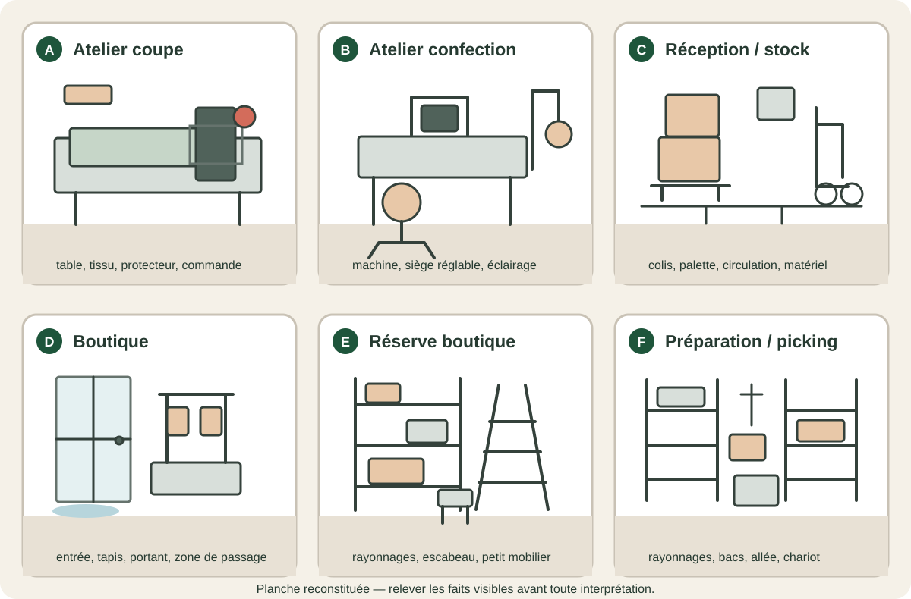

R10 · Document créé pour le TP
Observations de terrain et entretiens complémentaires
Ces éléments sont fictifs. Avant de les consulter, formulez ce que vous cherchez à vérifier. La planche présente plusieurs zones de travail sans indiquer laquelle est liée à l’information que vous recherchez.
1. Aller voir : planche des zones de travail
Consigne : observez d’abord les six zones sans ouvrir les entretiens. Relevez uniquement des faits visibles. Distinguez ce que l’image permet d’établir de ce qu’elle ne permet pas de savoir.

2. Demander : entretiens et compléments disponibles
N’ouvrez un entretien qu’après avoir noté les questions auxquelles vous cherchez une réponse. Une déclaration complète une observation ; elle ne transforme pas automatiquement une hypothèse en fait.
INC-01 — Atelier coupe · dégagement d’un tissu coincé
Entretien : l’opératrice indique que le tissu s’était replié à l’entrée de la zone de coupe. Elle a arrêté l’avance normale de la machine puis a tenté de dégager le tissu à la main, comme cela lui était déjà arrivé. Elle ne se souvient pas d’avoir utilisé l’arrêt d’urgence. Elle indique que le protecteur était en place mais ne sait pas préciser s’il empêchait l’accès pendant cette opération.
Observation complémentaire : le protecteur et l’arrêt d’urgence sont présents. La procédure à appliquer en cas de tissu coincé n’est pas affichée au poste. Un contrôle du dispositif d’arrêt d’urgence réalisé le 03/09/2026 a signalé un temps de réaction jugé trop long ; une intervention de maintenance est planifiée.
INC-03 — Réception / stock · manutention de cartons
Entretien réalisé le 27/02/2026 avec le salarié concerné par l’événement du 26/02.
Que faisiez-vous juste avant de ressentir la douleur ?
« Je terminais une réception. Deux cartons avaient été laissés l’un sur l’autre dans la zone de déchargement et je voulais libérer le passage avant la livraison suivante. »
Comment avez-vous déplacé les cartons ?
« Je les ai pris ensemble à la main pour les déposer quelques mètres plus loin. En arrivant, je me suis tourné pour les poser sur le côté. C’est à ce moment-là que j’ai ressenti une douleur nette dans le bas du dos. Je les ai reposés tout de suite. Je ne suis pas tombé et rien ne m’a heurté. »
Pourquoi ne pas avoir utilisé le diable ?
« Normalement je l’utilise pour ce type de déplacement. Il n’était pas dans la zone de réception. Je pensais qu’un collègue l’avait laissé dans une autre partie du stock. Comme une autre livraison devait arriver, je n’ai pas voulu perdre de temps à aller le chercher. »
Le passage était-il encombré ou glissant ?
« Non. Le sol était sec et le passage était libre à ce moment-là. Le problème, c’était surtout que j’ai porté les deux cartons au lieu d’aller chercher le matériel. »
Cette situation est-elle exceptionnelle ?
« Non. Le diable et les chariots servent à plusieurs personnes. Ils ne reviennent pas toujours au même endroit. Quand les réceptions s’enchaînent, on cherche parfois le matériel ou on fait un petit déplacement à la main pour aller plus vite. »
Existe-t-il une règle pour remettre le matériel à un emplacement précis ?
« Pas à ma connaissance. On sait qu’il faut utiliser les aides de manutention, mais je ne connais pas d’emplacement marqué ni de contrôle avant une réception. »
Observation complémentaire : un diable et deux chariots sont disponibles pour la réception. Aucun emplacement fixe n’est matérialisé dans la zone et aucune consigne de remise en place n’est affichée. Leur disponibilité au point de réception n’est donc pas garantie.
À distinguer : les propos du salarié sont des déclarations. L’existence du matériel et l’absence d’emplacement matérialisé sont observables. La cause à retenir et le niveau de risque doivent être argumentés à partir du croisement des informations.
INC-04 — Boutique · glissade près de l’entrée
Entretien : la salariée indique qu’il pleuvait depuis plusieurs heures. Le tapis d’entrée était humide et plusieurs clients étaient entrés avec des chaussures mouillées. Elle ne se souvient pas avoir vu de panneau signalant un sol humide.
Observation complémentaire : un tapis absorbant est installé en permanence. Aucun panneau mobile « sol humide » n’est disponible dans la réserve de la boutique. Le nettoyage est prévu chaque matin, sans contrôle spécifique en cours de journée lorsqu’il pleut.
INC-11 — Atelier confection · douleurs cervicales
Entretien : la salariée précise que le poste est utilisé par plusieurs personnes et que les réglages sont modifiés au cours de la journée. Elle règle le siège « à peu près » mais aucun repère n’est conservé. Elle signale aussi que l’éclairage local lui paraît faible sur certaines opérations de précision.
Observation complémentaire : les sièges sont réglables. Aucun réglage de référence n’est affiché et aucune trace de sensibilisation récente à l’ajustement du poste n’est disponible.
INC-13 — Boutique · accès à une étagère haute
Entretien : la salariée indique avoir utilisé un petit tabouret présent dans la réserve pour gagner du temps. Elle connaissait l’existence d’un escabeau, mais celui-ci était rangé dans l’autre réserve et nécessitait de traverser l’espace de vente.
Observation complémentaire : l’escabeau est conforme et en bon état, mais il n’est pas stocké dans la réserve où l’événement s’est produit. Le tabouret domestique est toujours présent dans cette réserve.
INC-16 — E-commerce · heurt dans la zone de picking
Entretien : pendant une période de forte activité, plusieurs bacs avaient été déposés provisoirement au sol en attente de traitement. Le salarié indique que cette situation est devenue plus fréquente depuis l’augmentation du volume de commandes.
Observation complémentaire : une démarche 5S a été lancée le 01/09/2026, mais les emplacements définitifs des bacs ne sont pas encore tous matérialisés et aucune règle de stockage temporaire n’est encore formalisée.
3. Croiser avant de conclure
Pour chaque événement étudié, confrontez le registre, les faits visibles sur la planche, les déclarations recueillies et les mesures déjà inscrites au DUERP. Si une information reste inconnue, indiquez-la explicitement au lieu de la déduire.